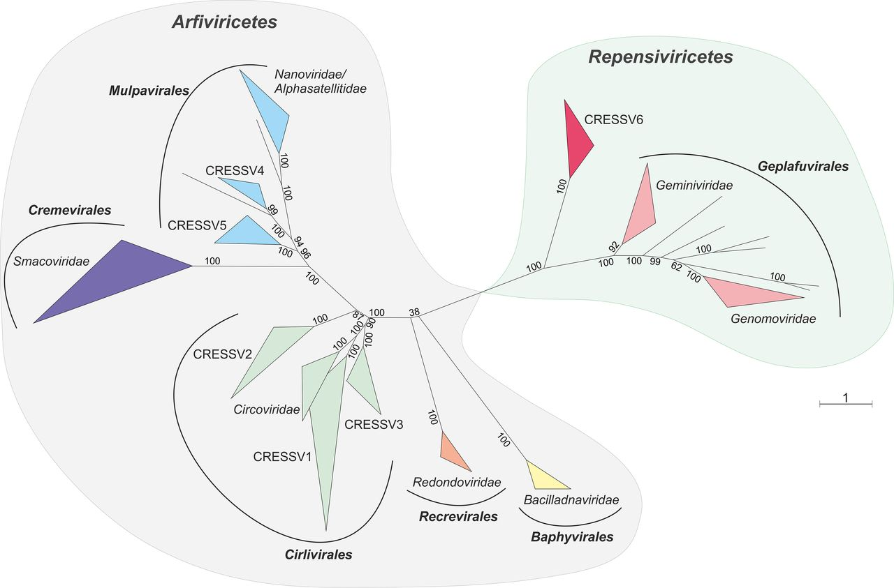

Overview
This is CRESS-GLUE, an open access GLUE project designed to support comparative genomic and evolutionary analysis of circular Rep-encoding single-stranded DNA (CRESS DNA) viruses (phylum Cressdnaviricota).

The figure above, taken from a report by Krupovic et al. (2020), shows an unrooted phylogenetic tree of the Cressdnaviricota, based on alignment of Rep proteins.
CRESS-GLUE has been designed to facilitate any form of comparative genomic analysis involving CRESS DNA viruses. It contains a richly annotated sequence dataset for these viruses, comprised of both viral sequences and endogenous viral elements (EVEs).
License
This project is licensed under the GNU Affero General Public License v. 3.0.